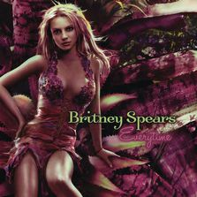

Evertime
《Evertime》是全球流行天后布兰妮·斯皮录制演唱的一首歌曲，于2004年5月7日由Jive Records 作为布兰妮第4张录音室布兰妮第4张录音室专辑《In the Zone》的第3支单曲发行。
toxic
《Evertime》是全球流行天后布兰妮·斯皮录制演唱的一首歌曲，于2004年5月7日由Jive Records

Britney Spears
布莱尼·斯皮尔斯
布兰妮·斯皮尔斯（Britney Spears），美国著名流行女歌手、国际流行级天后。童年时期曾加盟热门电视节目“米老鼠俱乐部”。 1997年与Jive唱片公司签约后成为旗下艺人。1999年发行首张专辑，以一首《Baby One More Time》红遍全球，其后作品《Oops!... I Did It Again》也成为国际性的冠军热门单曲。 因其可爱的容貌和甜美的嗓音被媒体称为“小甜甜”。在“全球娱乐界最富有女歌手”排行榜中，Britney名列第五位，是前五名中最年轻、出道时间最短的。 至今她拥有一座格莱美奖，一个终生成就奖在内的六座MTV音乐录像带大奖。同时被VH1评为2012年“唱片业一百位最伟大女艺人”第11名。
《Evertime》是全球流行天后布兰妮·斯皮录制演唱的一首歌曲，于2004年5月7日由Jive Records 作为布兰妮第4张录音室布兰妮第4张录音室专辑《In the Zone》的第3支单曲发行。
《Evertime》是全球流行天后布兰妮·斯皮录制演唱的一首歌曲，于2004年5月7日由Jive Records